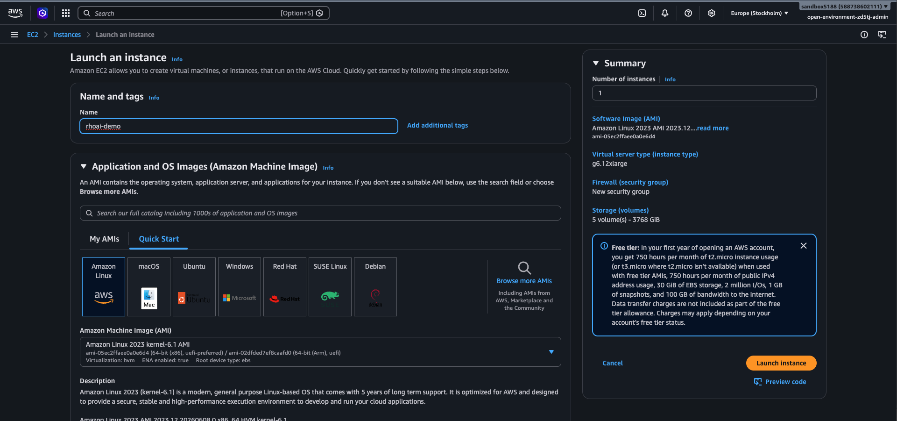
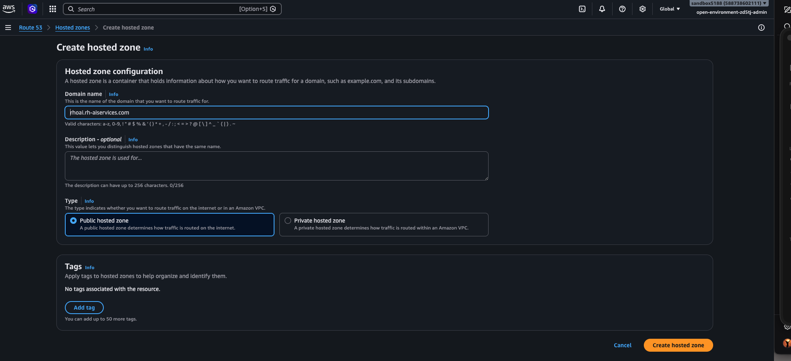
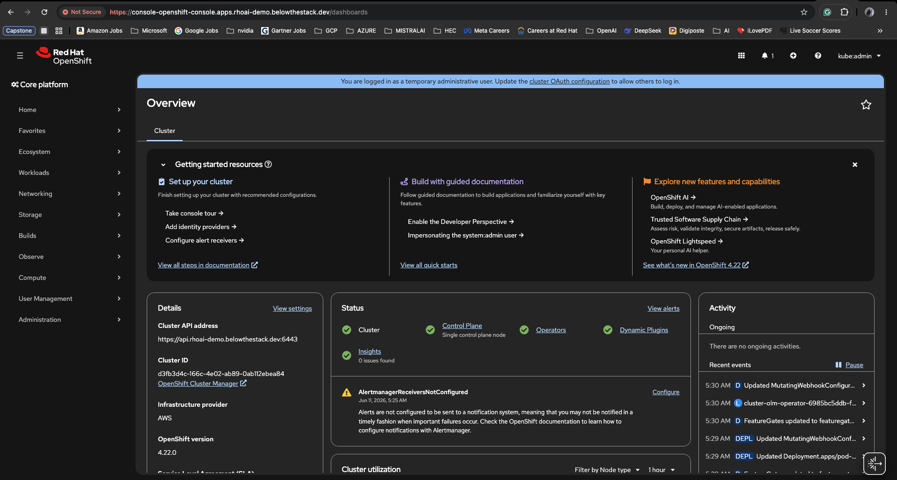

TL;DR — Save the shell script below, edit OCP_VERSION and your install-config.yaml, then run openshift-install create cluster --dir ocp-install. The full annotated walkthrough is below.
This post documents a compact, repeatable shell-based workflow used to install OpenShift 4.x on AWS. I extracted the working script, annotated each step, and included a sample install-config.yaml for a minimal IPI installation.
Why this matters
Repeatable installs are the difference between a cluster you understand and one you merely possess.
- Repeatability — encapsulates download, install, and bootstrap steps.
- Auditability — the full script appears below so you can review before running.
- Tunable — variables like
OCP_VERSIONandARCHare exposed for quick edits.
AWS prerequisites — at a glance
Before you run the installer, you need an EC2 host to drive the install and a public Route 53 hosted zone matching your baseDomain.


Both screenshots show the minimum configuration that satisfies the OpenShift installer’s IAM and DNS expectations.
Avoid latest-4.22 for production runs — pin to a release like 4.22.3 so the install is reproducible months later when latest has moved on.
Prerequisites
- A Linux host with
curl,tar, andsshavailable. - IAM permissions matching the OpenShift required AWS permissions.
- A valid OpenShift pull secret and an SSH key.
The script (annotated)
Rather than dropping the full ocp-install.sh here as one block, this section walks through the script one command group at a time so you can copy, adapt, and run each step independently.
The whole file is also available as a single download: ocp-install.sh. The sections below correspond 1:1 to the blocks inside it.
1. Patch the host
A predictable starting state. Run a full package update so the build host isn’t carrying half-applied kernel or curl patches when the installer hits the network.
2. Working directory and pinned versions
Everything below assumes a dedicated tools/ directory and three exported variables. Pinning OCP_VERSION to a specific release (not latest-*) is what makes the install reproducible weeks later.
3. Install the oc and kubectl clients
Download the client tarball from the Red Hat mirror, extract the two binaries, and move them onto PATH. The -fsSL flags make curl fail loudly on HTTP errors instead of silently writing an HTML error page into oc.tar.gz.
Verify before moving on:
4. Install the openshift-install binary
Same pattern, different tarball. This is the installer that orchestrates the bootstrap node, control plane, and AWS resources.
curl -fsSLk \
"https://mirror.openshift.com/pub/openshift-v4/${HOST_ARCH}/clients/ocp/${OCP_VERSION}/openshift-install-linux.tar.gz" \
-o openshift-install-linux.tar.gz
tar zxf openshift-install-linux.tar.gz
rm -f openshift-install-linux.tar.gz README.md
chmod +x openshift-install
sudo mv openshift-install /usr/local/bin/Verify the version matches OCP_VERSION:
5. Generate the cluster SSH key
The installer bakes this public key into every node so you can ssh core@… later for diagnostics. Use a dedicated key per cluster — don’t reuse your personal one.
~/.ssh/rhoai-demo is a private key. Add it to .gitignore and never copy it into a container image or CI artifact.
6. Launch the install
Drop the install-config.yaml from the next section into ./ocp-install/, then hand control over to the installer. The --dir flag is what makes re-runs, gather, and destroy work consistently against the same state.
Expect 30–45 minutes for an AWS IPI install. Watch progress with: ## Prepare the install-config.yaml file:
Adapt baseDomain, instance types, and pullSecret before use.
[ec2-user@ip-172-31-27-222 ~]$ mkdir -p ocp-install
# Place install-config.yaml inside ./ocp-install/ first, then:
[ec2-user@ip-172-31-27-222 ~]$ cat ocp-install/install-config.yaml
apiVersion: v1
baseDomain: belowthestack.dev
compute:
- architecture: amd64
hyperthreading: Enabled
name: worker
platform:
aws:
type: m6i.4xlarge
replicas: 0
controlPlane:
architecture: amd64
hyperthreading: Enabled
name: master
platform:
aws:
type: g6.12xlarge
rootVolume:
size: 1000
replicas: 1
metadata:
name: rhoai-demo
networking:
clusterNetwork:
- cidr: 10.128.0.0/14
hostPrefix: 23
machineNetwork:
- cidr: 10.0.0.0/16
networkType: OVNKubernetes
serviceNetwork:
- 172.30.0.0/16
platform:
aws:
region: eu-west-3
publish: External
pullSecret: '{"auths":{"cloud.openshift.com":{"auth":"<token>","email":"<email>"}}}'
sshKey: 'ssh-ed25519 AAAA...redacted...'What a successful install looks like
After the bootstrap phase finishes and the cluster operators settle, the installer prints a final summary block. If you see something close to the output below, the cluster is up and the web console is reachable.
[ec2-user@ip-172-31-27-222 ~]$ openshift-install create cluster --dir ocp-install/ --log-level=info
{.text filename="installer output"}
INFO Waiting up to 30m0s (until 3:53AM UTC) to ensure each cluster operator has finished progressing...
INFO All cluster operators have completed progressing
INFO Checking to see if there is a route at openshift-console/console...
INFO Install complete!
INFO To access the cluster as the system:admin user when using 'oc', run
INFO export KUBECONFIG=/home/ec2-user/ocp-install/auth/kubeconfig
INFO Access the OpenShift web-console here: https://console-openshift-console.apps.rhoai-demo.belowthestack.dev
INFO Login to the console with user: "kubeadmin", and password: "UoGgI-T78I9-25QEz-DHaI3"
INFO Time elapsed: 29sTwo things worth doing immediately:
pullSecret and the contents of ~/.ssh/rhoai-demo are credentials. Add install-config.yaml, *.pem, and auth/ to your .gitignore before running the installer — the installer mutates this file and writes auth/kubeadmin-password and auth/kubeconfig next to it.
Inside the OpenShift web console
Browsing to the URL printed by the installer (https://console-openshift-console.apps.rhoai-demo.belowthestack.dev) and logging in with kubeadmin lands on the cluster Overview. This is the first place I check after every install — it confirms the control plane, operators, and Insights all came up green before any workloads are scheduled.

A few things worth noticing in Figure 4:
- Top banner — “You are logged in as a temporary administrative user…” is the cluster reminding you that
kubeadminis bootstrap-only and you should configure a real identity provider via cluster OAuth. - Status tiles — Control Plane, Operators, and Insights are all green. Single control plane node matches the
controlPlane.replicas: 1lab topology from the install-config. - Details panel — confirms
OpenShift version: 4.22.0,Infrastructure provider: AWS, and the cluster API endpointhttps://api.rhoai-demo.belowthestack.dev:6443used byoc/kubectl. - AlertmanagerReceiversNotConfigured — expected on a fresh cluster. Wire up a receiver (PagerDuty, Slack, email…) before treating any workload as production.
The console’s Getting started resources panel (“Add identity providers”, “Configure alert receivers”, “Take console tour”) is a sensible day-0 checklist — work through it before installing the RHOAI operator on top.
Installing Red Hat OpenShift AI 3.4
With OpenShift 4.22 healthy, RHOAI installs as a stack of operators plus two custom resources — a DSCInitialization (one-time bootstrap) and a DataScienceCluster (the components you actually want enabled). The flow below uses the CLI end-to-end so it is scriptable and easy to re-run.
RHOAI 3.4 expects OpenShift 4.16+ and pulls in Authorino, Service Mesh, Serverless, and the Pipelines operators as dependencies. On a GPU-enabled worker pool (g6.12xlarge in this guide) you additionally want the Node Feature Discovery and NVIDIA GPU operators installed before the RHOAI operator.
1. Install the prerequisite operators
Each prerequisite below gets its own namespace, its own OperatorGroup, and a pinned Subscription. This is more verbose than dropping everything into openshift-operators, but it makes each operator’s blast radius and upgrade lifecycle explicit — and gives you something concrete to delete if you ever want to uninstall one cleanly.
All four operators below ship in AllNamespaces install mode, so each OperatorGroup is created with an empty spec (no targetNamespaces). Save each manifest to a file and apply with oc apply -f <file>.
1.1 Red Hat OpenShift Serverless
Serverless (Knative) is what backs KServe model serving in RHOAI 3.4. Without it, the kserve component will refuse to come up healthy.
op-serverless.yaml
1.2 Red Hat OpenShift Service Mesh
Service Mesh (Istio) provides the ingress gateway and mTLS plumbing that KServe + the RHOAI dashboard sit behind.
op-servicemesh.yaml
---
apiVersion: operators.coreos.com/v1alpha1
kind: Subscription
metadata:
name: servicemeshoperator3
namespace: openshift-operators
spec:
channel: stable
installPlanApproval: Automatic
name: servicemeshoperator3
source: redhat-operators
sourceNamespace: openshift-marketplace
startingCSV: servicemeshoperator3.v3.3.31.3 Red Hat OpenShift Pipelines
Pipelines (Tekton) is the engine behind RHOAI’s Data Science Pipelines component.
op-pipelines.yaml
---
apiVersion: operators.coreos.com/v1alpha1
kind: Subscription
metadata:
name: openshift-pipelines-operator-rh
namespace: openshift-operators
spec:
channel: latest
installPlanApproval: Automatic
name: openshift-pipelines-operator-rh
source: redhat-operators
sourceNamespace: openshift-marketplace
startingCSV: openshift-pipelines-operator-rh.v1.22.21.5 Verify all four prerequisites
Watch every prerequisite CSV across the four namespaces. Every row should land on Succeeded (typically within 2–4 minutes):
[ec2-user@ip-172-31-27-222 ~]$ oc get csv -n openshift-operators-redhat \
-o custom-columns=NAME:.metadata.name,VERSION:.spec.version,PHASE:.status.phase
NAME VERSION PHASE
authorino-operator.v1.2.2 1.2.2 Succeeded
openshift-pipelines-operator-rh.v1.22.2 1.22.2 Succeeded
serverless-operator.v1.37.1 1.37.1 Succeeded
servicemeshoperator3.v3.3.3 3.3.3 Succeeded2. Enable GPUs (Node Feature Discovery + NVIDIA GPU Operator)
Skip this section on a CPU-only cluster. On a GPU worker pool, the NFD operator labels nodes that expose PCI GPU devices, and the NVIDIA GPU operator deploys the driver, container toolkit, and DCGM exporter.
2.1 Node Feature Discovery
NFD ships in AllNamespaces install mode — empty OperatorGroup spec.
op-nfd.yaml
---
apiVersion: v1
kind: Namespace
metadata:
name: openshift-nfd
---
apiVersion: operators.coreos.com/v1
kind: OperatorGroup
metadata:
name: nfd-operators
namespace: openshift-nfd
spec:
targetNamespaces:
- openshift-nfd
upgradeStrategy: Default
---
apiVersion: operators.coreos.com/v1alpha1
kind: Subscription
metadata:
name: nfd
namespace: openshift-nfd
spec:
channel: stable
name: nfd
source: redhat-operators
sourceNamespace: openshift-marketplace
installPlanApproval: Automatic2.2 NVIDIA GPU Operator
The NVIDIA GPU operator ships in OwnNamespace install mode, so the OperatorGroup must list its own namespace under targetNamespaces.
op-nvidia-gpu.yaml
---
apiVersion: v1
kind: Namespace
metadata:
name: nvidia-gpu-operator
---
apiVersion: operators.coreos.com/v1
kind: OperatorGroup
metadata:
name: nvidia-gpu-operators
namespace: nvidia-gpu-operator
spec:
targetNamespaces:
- nvidia-gpu-operator
---
apiVersion: operators.coreos.com/v1alpha1
kind: Subscription
metadata:
name: gpu-operator-certified
namespace: nvidia-gpu-operator
spec:
channel: stable
name: gpu-operator-certified
source: certified-operators
sourceNamespace: openshift-marketplace
installPlanApproval: Automatic2.3 Roll out the GPU driver — ClusterPolicy
Once both CSVs reach Succeeded, apply NVIDIA’s default ClusterPolicy — the CR that actually rolls out the driver DaemonSet, container toolkit, and DCGM exporter onto every GPU-labeled node:
Verify a node now advertises nvidia.com/gpu:
3. Install the Red Hat OpenShift AI operator
RHOAI lives in redhat-ods-operator. Create the namespace, an OperatorGroup, and a pinned Subscription for the fast channel (use stable for production).
rhoai-operator.sh
oc apply -f - <<'EOF'
---
apiVersion: v1
kind: Namespace
metadata:
name: redhat-ods-operator
---
apiVersion: operators.coreos.com/v1
kind: OperatorGroup
metadata:
name: rhods-operator
namespace: redhat-ods-operator
---
apiVersion: operators.coreos.com/v1alpha1
kind: Subscription
metadata:
name: rhods-operator
namespace: redhat-ods-operator
spec:
channel: fast
name: rhods-operator
source: redhat-operators
sourceNamespace: openshift-marketplace
installPlanApproval: Automatic
EOFWait for the operator CSV:
You’re looking for rhods-operator.3.4.x in Succeeded.
4. Bootstrap the platform — DSCInitialization
The DSCI configures the Service Mesh, monitoring, and the redhat-ods-applications namespace that every RHOAI workload lives in. Apply once per cluster:
dsci.yaml
apiVersion: dscinitialization.opendatahub.io/v1
kind: DSCInitialization
metadata:
name: default-dsci
spec:
applicationsNamespace: redhat-ods-applications
monitoring:
managementState: Managed
namespace: redhat-ods-monitoring
serviceMesh:
managementState: Managed
controlPlane:
name: data-science-smcp
namespace: istio-system
trustedCABundle:
managementState: Managed
customCABundle: ""5. Enable components — DataScienceCluster
This is the CR you’ll edit most often: it’s where you turn individual components on or off. The example below enables the full set used in a typical RHOAI demo (dashboard, workbenches, pipelines, model serving, training, Ray, Kueue).
dsc.yaml
apiVersion: datasciencecluster.opendatahub.io/v1
kind: DataScienceCluster
metadata:
name: default-dsc
spec:
components:
dashboard: { managementState: Managed }
workbenches: { managementState: Managed }
datasciencepipelines: { managementState: Managed }
modelmeshserving: { managementState: Managed }
kserve: { managementState: Managed }
kueue: { managementState: Managed }
ray: { managementState: Managed }
codeflare: { managementState: Managed }
trainingoperator: { managementState: Managed }
trustyai: { managementState: Managed }
modelregistry: { managementState: Managed }Start narrow — dashboard, workbenches, and datasciencepipelines is enough to take the platform for a spin. Flip components from Removed to Managed later by re-applying this CR.
6. Open the RHOAI dashboard
The operator publishes a Route in redhat-ods-applications. Print it and open it in your browser:
Log in with the same kubeadmin you used for the OpenShift console — once RHOAI sees you have cluster-admin, the dashboard exposes Settings → User management where you can grant data scientist / admin roles to real users from your IdP.
Don’t rely on kubeadmin for RHOAI day-to-day. RHOAI ties workbench ownership and pipeline runs to the logged-in user — when you eventually delete the kubeadmin secret, anything created by it becomes orphaned. Add an IdP before sharing the cluster.
Important notes & best practices
- Replace
OCP_VERSIONwith a specific release for reproducible runs. - Always pass
--dirso re-running andgathercommands work consistently. - Run downloads from a bastion with stable network connectivity.
- The single-master
controlPlane.replicas: 1above is a lab topology — production needs three.
A controlPlane.replicas: 1 install is fine for a demo cluster but should never carry workloads you can’t lose. For HA, use three control-plane nodes and at least two workers across availability zones.
Troubleshooting
| Symptom | First thing to check |
|---|---|
| Installer hangs on bootstrap | openshift-install gather bootstrap --dir ocp-install |
mv fails moving binaries |
Re-run the mv lines with sudo |
| AWS API quota errors | Verify the EC2/EBS quotas in your target region |
| DNS resolution fails post-install | Verify Route 53 NS records match the hosted zone |
Wrap-up
If you treat the script in this post as a starting point rather than a black box — pin versions, audit IAM, and review the install-config.yaml before each run — you’ll get a reproducible OpenShift install you actually understand.